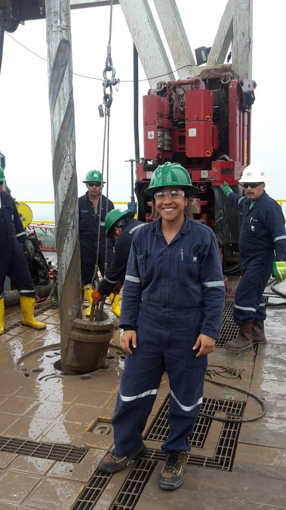
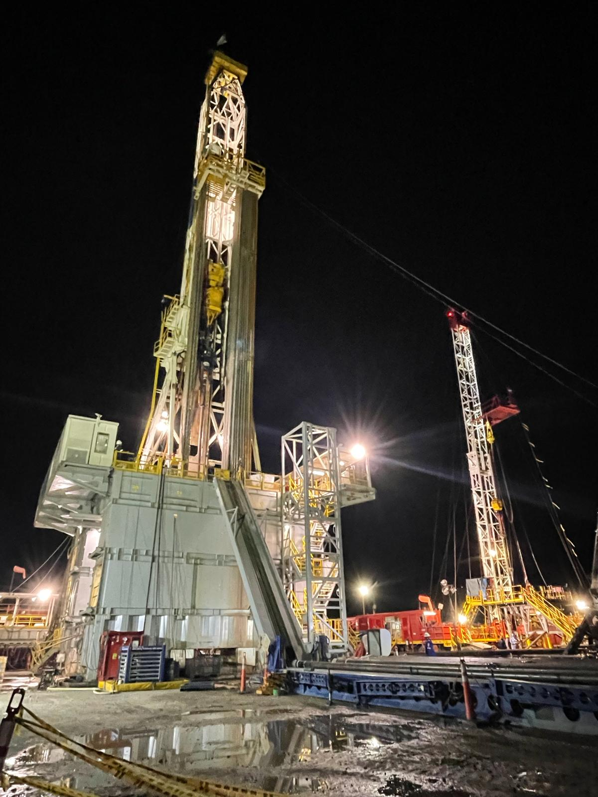

Working in USA
In 2015, I participated in a intercultural exchange program. Work and Travel!
I worked as a waitress for Bubba Gump Shrimp Co, in Galveston Texas.
It was an awesome opportunity, I met incredible people from around the globe!.
First Time in a Rig
When I came back from the united States. I applied for an intership in the
Oil and Gas Industry. This is me in a rigsit working for Equion Energy!
In this field is where my profesional journey began.
Some of my functions were:
Analyze offset well information.
Identify learnt lessons.
Elaborate Plan vs Real graphs daily.
Participate in next projects planning stages.
Bringing Engineering Into Practice
In 2017, After my graduation I was selected during a recruitment fair in my university
I got a job at Weatherford Colombia, as a Well planner Engineer for the Drilling Product Line.
This was my team the office during those days!.
New Toys!
After 3 years and a half working in the office. I got the opportunity to go to the field and
I would call this experience as the happiest in my laboral life until now
I worked with different tools, and I got to know marvellous people and collegues.
If somebody ask me what did I learn during those days, I would answer I learnt the real meaning of friendship and family!
Programmer Era
After that I decided to come to Canada, to became a Computer Programmer!